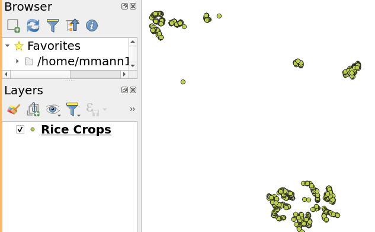

Introduction to Python in QGIS
Welcome to our tutorial on using Python with QGIS! QGIS is a powerful open-source geographic information system (GIS) that supports various GIS operations and spatial data management. One of the fantastic features of QGIS is its built-in Python console, which allows you to enhance your GIS projects with programming.
QGIS brings a Python API (see PyQGIS Developer Cookbook for some code samples) to let the user interact with its objects (layers, features, or interface). QGIS also has a Python console.
Table of contents
- Python Modules
- Using Python with QGIS
- Tutorial 1: Working with Crop Types in QGIS Python
- Tutorial 2: Counting Observations by Crop Type in QGIS
Accessing the Python Console in QGIS
To get started with Python in QGIS, you first need to access the Python console. Here’s how you can do it:
- Open QGIS: Start by launching the QGIS application on your computer.
- Open the Python Console: Look for a button on the toolbar that resembles a Python logo or go to the menu bar and select
Plugins->Python Console. This will open a small scripting window at the bottom or side of your QGIS workspace.
The Python console in QGIS is split into two main parts:
- The command line: This is where you can type single lines of Python code and execute them immediately.
- The editor: Here, you can write more complex scripts, save them, and run them as needed.
This dual setup allows you to quickly test small pieces of code and develop more extensive scripts for automating tasks.
QGIS Python Console
The console is a Python interpreter that allows you to execute Python commands. Modules from QGIS (analysis, core, gui, server, processing, 3d) and Qt (QtCore, QtGui, QtNetwork, QtWidgets, QtXml) as well as Python's math, os, re, and sys modules are already imported and can be used directly.
The interactive console is composed of a toolbar, an input area, and an output area.

Toolbar
The toolbar proposes the following tools:
-
Clear Console
 to wipe the output area;
to wipe the output area; -
Run Command
 available in the input area: same as pressing Enter;
available in the input area: same as pressing Enter; -
Show Editor
 : toggles console editor visibility;
: toggles console editor visibility; -
Options...
 : opens a dialog to configure console properties;
: opens a dialog to configure console properties; -
Help...
 provides a menu to access various documentation:
provides a menu to access various documentation:
Dock Code Editor  to dock or undock the panel in QGIS interface.
to dock or undock the panel in QGIS interface.
Why Use Python in QGIS?
Using Python in QGIS allows you to automate repetitive tasks, manipulate spatial data in ways that are cumbersome or impossible with the GUI alone, and extend the functionality of QGIS through custom scripts and plugins.
Throughout this tutorial, we will explore simple Python commands and scripts that you can execute in the Python console to interact with QGIS and perform basic GIS operations. These activities are designed to be fun and engaging, providing you with a hands-on introduction to programming within a GIS environment.
Let’s get started with some basic commands to familiarize you with the Python console in QGIS!
Introduction to Python Modules
In Python, a module is a file containing Python code that defines functions, classes, or variables, which can be accessed and utilized in other Python scripts.
Python has a vast standard library of modules that you can use for various tasks, from mathematical operations to handling internet data. Additionally, third-party modules can be installed and used in your projects, greatly extending Python's capabilities.
Importing Modules in Python
To use a module in Python, you need to import it into your script using the import statement. Once a module is imported, you can call its functions or access its classes and variables using the dot notation.
For example, to import the Python math module, you would write:
import math
Now you can use functions within the math module:
result = math.sqrt(25) # Computes the square root of 25
print(result)
Paste these lines into the Python console in QGIS to see the output and press
Using Python with QGIS
QGIS extends Python’s capabilities by providing a specialized module called qgis. This module allows you to interact with the QGIS application, manipulating geographical data and automating tasks.
To start scripting with Python in QGIS, you'll first need to import the necessary modules provided by QGIS. These typically include:
qgis.core: Provides core functionality like managing and manipulating vector and raster layers.qgis.utils: Contains utility functions for interacting with the QGIS interface.iface: A special variable from theqgis.utilsmodule representing the QGIS interface, allowing you to interact with the application itself, like opening and displaying layers.
Here’s how to import these modules into your QGIS Python script:
from qgis.core import *
import qgis.utils
With these imports, you’re now ready to use the QGIS Python API to enhance your GIS projects with automated scripts and customized functionality!
Tutorial 1: Working with Crop Types in QGIS Python
In this part of our tutorial, we'll learn how to read a GeoJSON file that contains various crop types, subset the data for rice crops, and then write the results to a new file. We will also explore a variant where you'll learn to write the results to a Shapefile instead by reading the QGIS API documentation.
Step 1: Reading the GeoJSON File
First, we need to load our GeoJSON file into QGIS. We'll use the iface object, which is a part of the QGIS Python API that represents the main interface of QGIS.
from qgis.core import *
import qgis.utils
# Path to the GeoJSON file
file_path = 'path_to_your_file/tz_labels.geojson'
# Load the layer in
rice_layer = iface.addVectorLayer(file_path, # path to the file
baseName= "Rice Crops", # name of the layer in QGIS
providerKey="ogr") # how to read it
if not rice_layer:
print("Layer failed to load!")
else:
print("Layer loaded successfully!")
Paste these lines into the Python console in QGIS to see the output and press
You should now see Rice Crops in your QGIS Layers Panel. This layer contains the crop types data from the GeoJSON file.

From this point on we will be refering this layer by the name rice_layer in our code.
Where do I find the path to my file?
In order to load a file into python you will need to find the 'path' to the tz_labels.geojson file. Start by Layer > Add Layer > Add Vector Layer. Then in your layers list right-click on tz_labels and select Properties. In the General tab you will find the Layer Source which is the path to your file. Copy and paste this path into the file_path variable in the code above.

Make sure your path doesn't include 'file://' at the beginning.
Step 2: Subsetting the Data for Maize Crops
Next, we'll filter out the rice crops from our dataset. We'll assume that the crop types are stored in a field named crop_type.
# Select features where the crop type is 'Rice'
rice_layer.selectByExpression("\"primary_crop\" = 'maize'")
# Print the number of selected rows
print(f"Number of selected rows: {rice_layer.selectedFeatureCount()}")
Paste these lines into the Python console in QGIS to see the output and press
Note:
For more on how to create expressions in Qgis see Select Expressions
Step 3: Writing the Subset to a New GeoJSON File
After subsetting the data, let's write the selected features to a new GeoJSON file.
# Define the output file path
output_path = 'path_to_output/rice_subset.geojson'
# Write the selected features to a new GeoJSON
error = QgsVectorFileWriter.writeAsVectorFormat(layer = rice_layer,
fileName = output_path, # path and name of the output file
fileEncoding = "UTF-8", # encoding of the output file
destCRS = rice_layer.crs(), # projection of the output file
driverName ="GeoJSON", # output file format
onlySelected=True) # write only selected features
if error[0] == QgsVectorFileWriter.NoError:
print("Success: GeoJSON file has been created.")
else:
print("Error: Failed to write GeoJSON.")
Your output_path should be a new file in the same directory as the original file. You can now load this new file into QGIS to see the subset of rice crops.
Full Script
The following is the full script that you can run in the QGIS Python console to read a GeoJSON file, subset the data for rice crops, and write the results to a new file.
from qgis.core import *
import qgis.utils
# Path to the GeoJSON file
file_path = 'path_to_your_file/tz_labels.geojson'
# Load the layer in
rice_layer = iface.addVectorLayer(file_path, # path to the file
baseName= "Rice Crops", # name of the layer in QGIS
providerKey="ogr") # how to read it
if not rice_layer:
print("Layer failed to load!")
else:
print("Layer loaded successfully!")
# Select features where the crop type is 'Rice'
rice_layer.selectByExpression("\"primary_crop\" = 'maize'")
# Print the number of selected rows
print(f"Number of selected rows: {rice_layer.selectedFeatureCount()}")
# Define the output file path
output_path = 'path_to_output/rice_subset.geojson'
# Write the selected features to a new GeoJSON
error = QgsVectorFileWriter.writeAsVectorFormat(layer = rice_layer,
fileName = output_path, # path and name of the output file
fileEncoding = "UTF-8", # encoding of the output file
destCRS = rice_layer.crs(), # projection of the output file
driverName ="GeoJSON", # output file format
onlySelected=True) # write only selected features
if error[0] == QgsVectorFileWriter.NoError:
print("Success: GeoJSON file has been created.")
else:
print("Error: Failed to write GeoJSON.")
Challenge A: Import your file
Now that you've created a new GeoJSON file with the subset of rice crops, try loading it into QGIS and exploring the data using output_path and iface.addVectorLayer()
Challenge B: Writing to a Shapefile
If you want to write the output to a Shapefile instead, you'll need to consult the QGIS API documentation to learn about the parameters required for writing a Shapefile. Here's how you might start:
- Open the QGIS Python API documentation: QGIS Cook Book
- Search for
QgsVectorFileWriterand read about the different parameters you can use, especially how to specify the output format for a Shapefile.
Here’s a hint on how you might adjust the code for writing a Shapefile:
# Define the output file path for the Shapefile
output_path_shp = 'path_to_output/rice_subset.shp'
error = QgsVectorFileWriter.writeAsVectorFormat(layer = rice_layer,
fileName = output_path_shp, # path and name of the output file
fileEncoding = "UTF-8", # encoding of the output file
destCRS = rice_layer.crs(), # projection of the output file
driverName = __________________, # output file format
onlySelected=True) # write only selected features
if error_shp[0] == QgsVectorFileWriter.NoError:
print("Success: Shapefile has been created.")
else:
print("Error: Failed to write Shapefile.")
Summary Tutorial 1
In this tutorial, we learned how to use Python in QGIS to read a GeoJSON file, subset the data for rice crops, and write the results to a new file. We also explored how to write the output to a Shapefile by consulting the QGIS API documentation.
Tutorial 2: Counting Observations by Crop Type in QGIS
In this tutorial, we will learn how to load a vector layer into QGIS, access its attribute data, and perform a basic analysis by counting the number of observations for each crop type using the primary_crop field from the tz_labels.geojson dataset.
Step 1: Load the Vector Layer
First, let’s load the tz_labels.geojson into QGIS. Open the Python console in QGIS and use the following command to add the layer:
# Load the tz_labels.geojson file
layer_path = "/path/to/tz_labels.geojson" # Update this path to your file's location
tz_labels_layer = iface.addVectorLayer(layer_path, "TZ Labels", "ogr")
if not tz_labels_layer:
print("Failed to load the layer.")
else:
print("Layer loaded successfully.")
Using Dictionaries to Count Items in Python
In Python, a dictionary is a collection of key-value pairs where each key is unique. This structure is ideal for counting occurrences of items because you can use the item as the key and its count as the value.
Basic Example of Counting with Dictionaries
Let’s look at a simple example using a list of fruits to illustrate how we can use a dictionary to count occurrences.
- List of Fruits: We start with a list of fruits where some fruits may appear multiple times.
# List of fruits
fruits = ['apple', 'banana', 'orange', 'apple', 'orange', 'banana', 'orange']
- Initialize the Dictionary: We start with an empty dictionary
fruit_countswhere each fruit name will be a key, and the count of that fruit will be the corresponding value.
# Initialize a dictionary to hold the count of each fruit
fruit_counts = {}
- Iterate Through the List: We loop through each element in the
fruitslist. - Update the Dictionary: As we move through the elements of
fruitslist, we update thefruit_countsdictionary:- If the fruit is already a key in the dictionary (
if fruit in fruit_counts), we increase its count by 1. - If the fruit is not yet a new
fruitkey in the dictionary, we add it and set its count to 1.
- If the fruit is already a key in the dictionary (
# Iterate over the list of fruits
for fruit in fruits:
if fruit in fruit_counts:
fruit_counts[fruit] += 1 # Increment the count if the fruit is already in the dictionary
else:
fruit_counts[fruit] = 1 # Set the count to 1 if the fruit is not in the dictionary yet
- Print the Results: After the loop, we print each fruit and its count. The
items()method returns a list of tuple pairs (key, value) from the dictionary.
# Print the counts for each fruit
for fruit, count in fruit_counts.items():
print(f"{fruit}: {count}")
Output:
The following is the output of the code snippet above:
apple: 2
banana: 2
orange: 3
Step 2: Applying This to QGIS Data
We can apply the same technique to count crop types from a feature layer in QGIS. Here’s how it connects to our GIS data example:
# Suppose we have a layer loaded as tz_labels_layer and it contains a field 'primary_crop'
# Initialize a dictionary to hold the count of each crop type
crop_counts = {}
# Access the features (rows) in the layer
for feature in tz_labels_layer.getFeatures():
# Get the value of the 'primary_crop' field
crop_type = feature['primary_crop']
# Use the dictionary counting method
if crop_type in crop_counts:
crop_counts[crop_type] += 1
else:
crop_counts[crop_type] = 1
# Print the counts for each crop type
for crop, count in crop_counts.items():
print(f"{crop}: {count}")
Your output should be as follows:
maize: 403
rice: 280
soybeans: 10
sunflower: 278
peanuts: 13
fallow_barren: 1
cassava: 76
sorghum: 131
okra: 2
millet: 139
no: 5
cotton: 50
don_t_know: 2
large_building: 1
forest_shrubland: 2
could be maize.: 1
water_body: 1
water: 5
This method efficiently tracks the number of occurrences of each crop type, providing a quick summary of the data in your GIS layer. By leveraging Python dictionaries, you can easily extend this approach to count various attributes across different datasets in QGIS.
Challenge C: Count observations by field size
Our tz_labels.geojson dataset contains a field named field_size that represents the size of each field. Try adapting the code to count the number of observations for each field size category.
Summary Tutorial 2
This tutorial demonstrates a simple way to perform attribute data analysis directly within QGIS using Python. By counting the occurrences of different crop types, we can quickly assess the composition of agricultural data in the provided tz_labels.geojson. This process can be adapted to other datasets and attributes for various analytical needs.